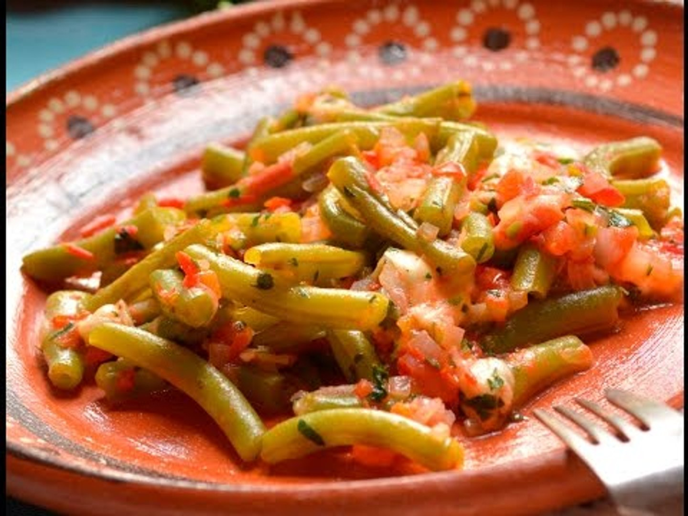

Receta: Ejotes a la Mexicana
Descripción:
Los ejotes a la mexicana son un platillo tradicional, saludable y muy rápido de preparar.
Imagen del platillo

Ingredientes:
- 500g de ejotes frescos
- 2 jitomates medianos
- 1/2 de cebolla blanca
- 1 diente de ajo
- 2 chiles serranos
- Sal al gusto
- 1 cucharada de aceite
- Agua
Imágenes de ingredientes

>img src="sal.png" alt="sal">
Ingrediente principal:
Pasos de preparación
- Lava y quita la punta a los ejotes. Córtalos en trozos de 2-3 cm.
- En una olla Express pon 1 taza de agua. Coloca los ejotes y cuece por 3 minutos a presión alta.
- Mientras, pica el jitomate, la cebolla, el ajo y los chiles serranos.
- En un sartén calienta el aceite y sofríe la cebolla y el ajo por 1 minuto.
- Agrega el jitomate y el chile. Cocina por 3 minutos hasta que el jitomate cambie de color.
- Escurre los ejotes e incorpóralos al sartén. Mezcla bien.
- Sazona con sal al gusto y cocina 2 minutos más.
- Sirve caliente como guarnición.
Receta por Danelli Barrera